Phase de recherche et intentions du projet
Avant de commencer la réalisation du dossier de presse, nous avons mené une phase de recherche approfondie pour définir l'univers visuel et narratif de notre événement fictif. Nous souhaitions créer un festival de musique qui se démarque des esthétiques habituelles et qui mette en avant une scène musicale peu médiatisée : le rap underground. Nous avons étudié plusieurs pistes : les codes graphiques des concerts alternatifs, les visuels inspirés des cultures gothiques et dark wave, et les identités visuelles utilisées par certains collectifs indépendants. L'objectif était d'identifier un style atmosphérique, brut et puissant, capable de refléter l'esprit d'un mouvement artistique souvent marginalisé. Cette recherche nous a aussi permis de comprendre ce qui fait un bon dossier de presse : une hiérarchie claire, des informations structurées, un ton cohérent, et une mise en page qui renforce l'expérience du lecteur. À partir de ces éléments, nous avons défini une direction artistique sombre, contrastée et immersive, illustrée par une affiche représentant des arches de pierre ouvrant sur un paysage rouge vif, renforçant l'idée d'un univers alternatif et intense.
Présentation du dossier de presse
Le dossier de presse que nous avons conçu pour le festival Exil BRAEK a été imaginé comme un outil complet permettant d'expliquer le concept, la programmation et les valeurs de l'événement. Nous avons structuré le document en plusieurs sections essentielles :
-
Présentation du festival : mise en contexte, objectifs et positionnement artistique.
-
Édito du créateur : un texte immersif qui permet de comprendre la vision derrière le projet.
-
Ateliers et programme : détail des activités proposées pour valoriser la scène underground et créer un lien avec le public.
-
Dates et artistes : présentation de la programmation répartie sur trois jours.
-
Billetterie, restauration & infos pratiques : toutes les informations nécessaires pour préparer la venue du public.
-
Engagements, partenaires et contact presse : une partie plus institutionnelle pour assurer la crédibilité du festival.
La mise en page joue un rôle essentiel : typographies fortes, contrastes marqués, ambiances sombres et touches de rouge pour rappeler l'énergie du rap underground. Nous avons également veillé à garder une lecture fluide en équilibrant textes, espaces respirants et éléments visuels. L'ensemble a été pensé pour être à la fois informatif et immersif, comme une extension de l'univers du festival.
Conclusion du projet
Ce projet nous a permis de travailler à la fois la recherche graphique, la construction d'un univers visuel et la conception d'un outil de communication professionnel. Le dossier de presse final témoigne de notre capacité à créer une identité cohérente et à l'adapter à différents supports. Travailler sur un festival fictif nous a également poussé à réfléchir aux attentes réelles des médias, aux contraintes de communication événementielle et à la manière de rendre un projet attractif et crédible. Au-delà de l'aspect technique, Exil BRAEK a été pour nous un terrain d'expérimentation créative, un moyen d'explorer une scène musicale alternative et de traduire son énergie dans un format éditorial complet. Ce projet constitue une pièce importante de notre portfolio, car il montre notre maîtrise de la conception graphique, de la rédaction et de la structuration d'un document professionnel.
 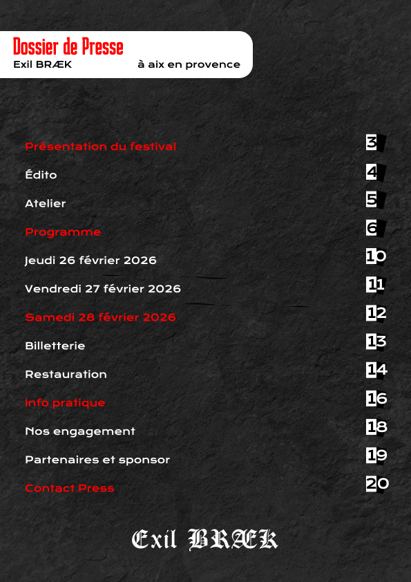
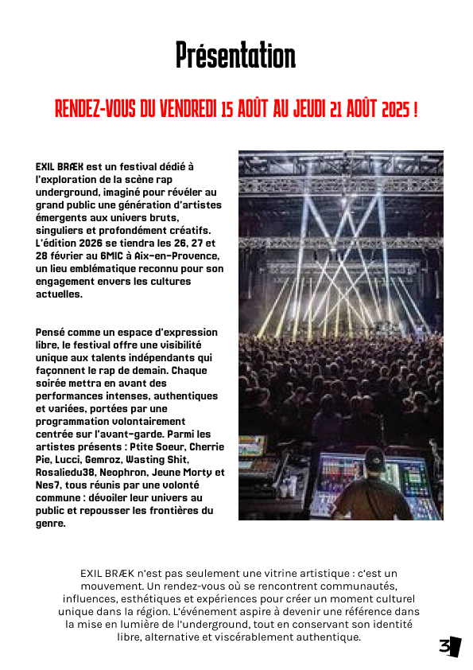
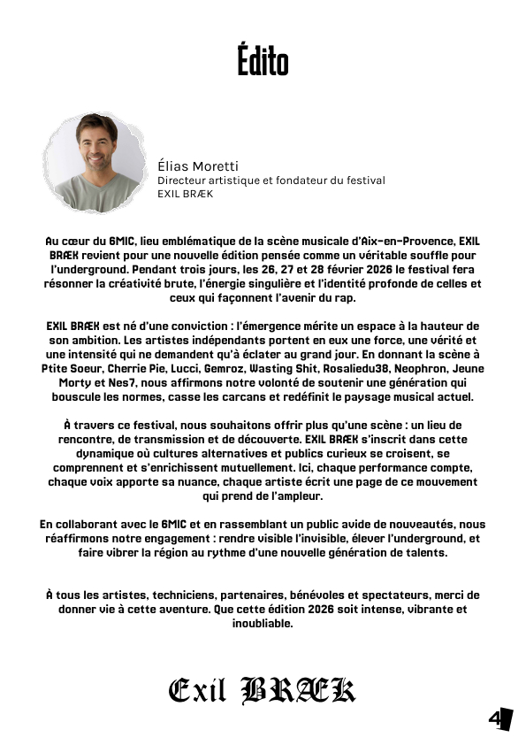
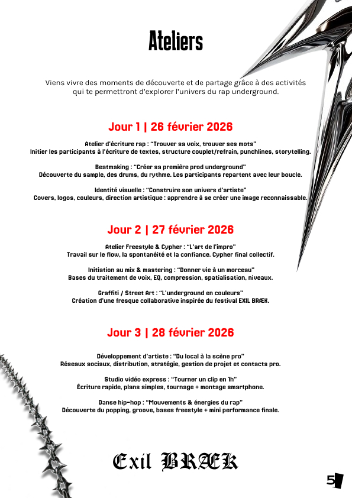
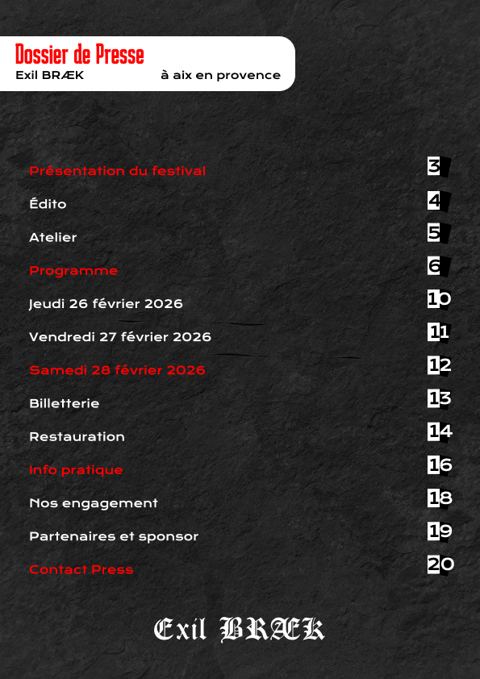
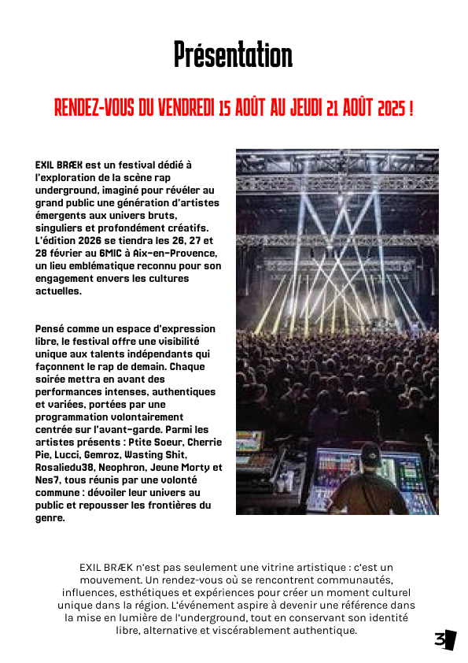
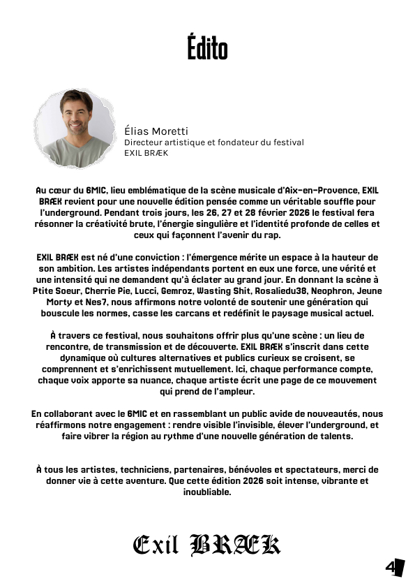
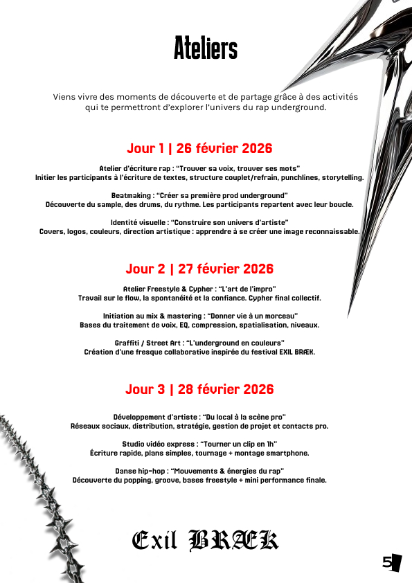


 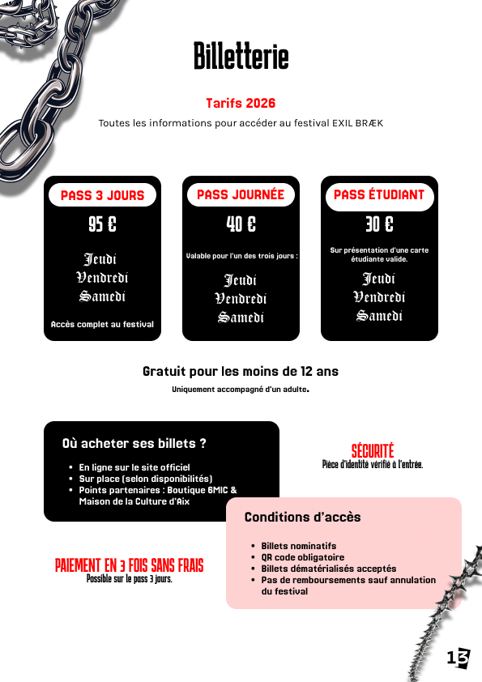
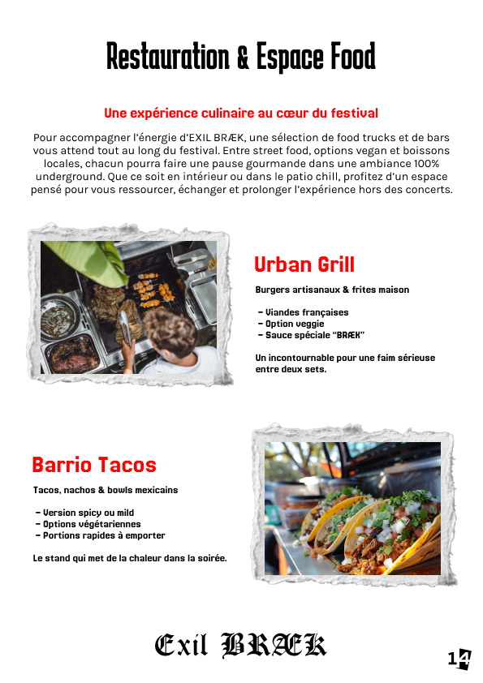
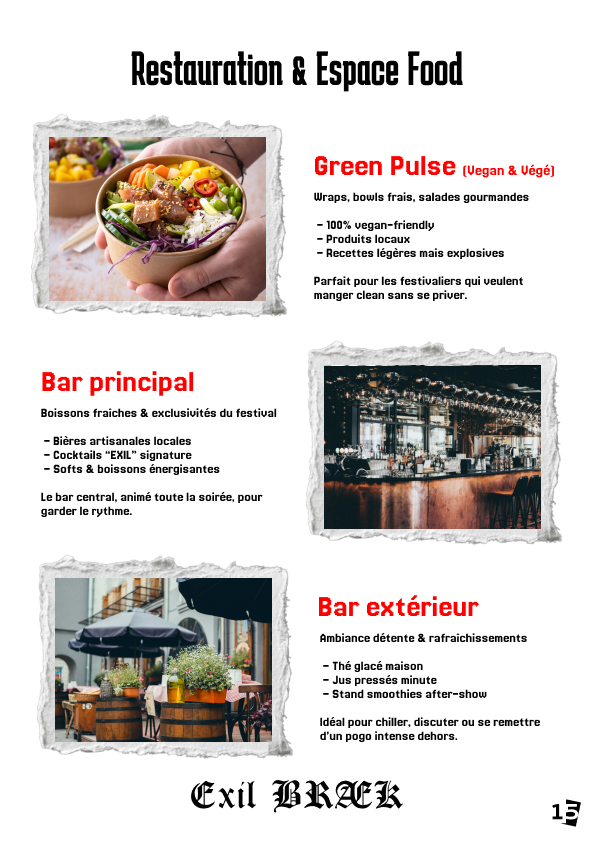
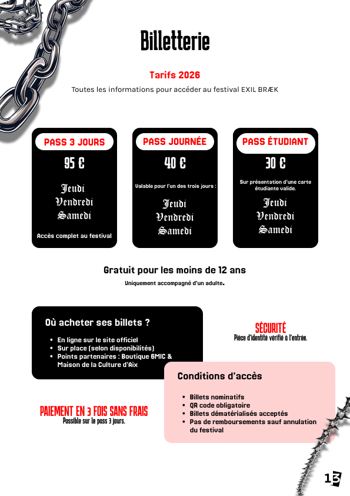
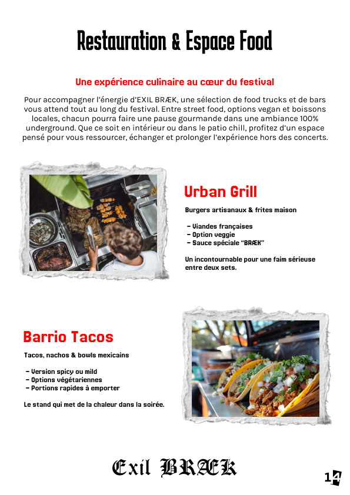
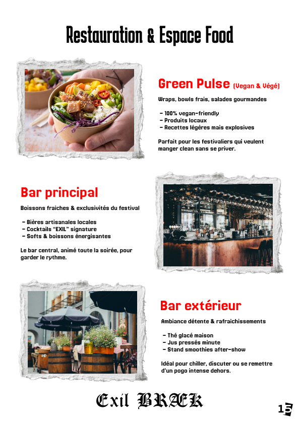